조경기사 (2009-05-10 기출문제)
1과목: 조경사
1. 인도의 샬리마르 바(Shalimar Bagh)와 관계 있는 것은?
- 제 1 노단은 손님접대 공간이다.
- 제 2 노단에는 큰탑이 2개 있다.
- 십자형수로가 조성되었다.
- 바부로나마가 조성하였다.
(정답률: 63%)

2. 최초의 서양 식 중국 조경은?
- 만수산 이궁
- 원명원 이궁
- 어화원
- 이화원
(정답률: 71%)
3. 페르시아 융단(Persian carpet)의 문양 과 알함브라 궁에 있는 사자의 중정(Caurt of the Lions) 그리고 인도의 타지마할(Taj- Malhal)의 정원에서 볼 수 있는 공통적인 요소는?
- 화단원(Par ter re)
- 중정(Patio)
- 연꽃무늬의 수반(水옳)
- 십자형의 수로
(정답률: 67%)
4. 고대 로마에서 규모가 큰 집에 5점식재나 화초와 관목의 군식 또는 과수원과 소채원 등이 꾸며진 후원은?
- 아트리움(atrium)
- 페리스틸리움(peristylium)
- 클로이스터 가든(cloister garden)
- 지스터스(xystus)
(정답률: 75%)
5. 삼국시대로부터 최근에까지 쓰였으며 조선시대에 특히 궁원 화계에 접경물로 많이 애용된 것은?
- 석등
- 녹랑(綠廊)
- 굴뚝
- 석연지(石蓮池)
(정답률: 48%)
6. 조선시대 중기 정영방(1577~1650)이 경상북도 영양에 별당원으로 조영한 서석지와 관련 있는 것 은?
- 곡수당과 곡수대
- 경정과 사우단
- 제월당과 매대
- 정우당과 몽천
(정답률: 42%)
7. 무굴인도에서 발견되는 바그(bagh)의 설명으로 가장 적합한 것은?
- 4개의 파티오(patio)로 구성된 궁전이다.
- 건울과 정원을 하나의 유니트화 하는 환경계획은 동시대에 이탈리아의 빌라(viIla)와 같은 개념이다.
- 담장으로 둘러 쌓인 공간으로 이집트 스티일의 연못, 수로, 정자 등의 시설이 있다.
- 네모난 공간으로 공공용 건물이 둘러싸여 있는 중정이다.
(정답률: 63%)
8. 이집트인은 종교관에 따라 거대한 예배신전이나 장제신전을 건설하고 그 주위에 신원(神苑)을 설치하였다. 그 중 현존하는 최고(最古)의 대표적인 조경 유적인 신원은?
- Thutmois 3세의 신전
- Amenophis 3tp의 장제 신전
- Menes왕의 장제 신전
- Hatshepsut여왕의 장제 신전
(정답률: 76%)
9. 중국 낙양(洛陽)의 교외 평천(平泉)에 화려한 정원을 꾸며 놓고 ”평천산거계자손기(平泉山居戒子孫記)에 먼 후세에라도 평천을 팔아 넘기는 자는 내 자손이 아니다“ 라는 기록을 남긴 사람은?
- 당(唐)의 대증(代宗)
- 백낙천(白樂天)
- 사마광(司馬光)
- 이덕유(李德裕)
(정답률: 83%)
10. 우리나라 사찰의 일반적인 공간구성기법 설명으로 틀린 것은?
- 인간이 지각하는데 적합하도록 인간적인 척도를 사용하였다.
- 성스러움과 속된 것을 융화시키기 위한 시설물로 다리가 설치되어 있었다.
- 경관의 연속적 변화로 계층적 질서(sequence)를 추구하였다.
- 경사지를 처리한 것을 보면 자연환경과의 조회를 고려하였음을 알 수 있다.
(정답률: 59%)
11. 튜터와 스튜어트왕조에 조성된 영국의 정형식 정원이 아닌 것은?
- 햄프턴 코트(Hampton court)
- 멜버른 홀(Melbourne Hall )
- 레벤스 홀(Levens Hall)
- 에름농빌(ErmenonviIle)
(정답률: 78%)
12. 일본에서는 고산수수법(枯山水手法)을 세계에 자랑할만한 정원 수법으로 여기고 있다. 몽창국사(夢窓園師)가 ‘벽암록’에 기술된 선의 이상경을 실현하고자 꾸며졌다고 전해지고 있는 고산수식 정원은 어느 시찰에 남아 있는가?
- 교토(京都)의 서방사(西芳)
- 교토의 천룡사(天龍寺)
- 평천(平泉)의 모월사(毛越寺)
- 교토의 대선원(大仙院)
(정답률: 67%)
13. 서윈의 강학공간인 강당 후면의 석축이나 화계에 주로 식재된 학자수가 아닌 것은?
- 느티나무
- 향나무
- 회화나무
- 버드나무
(정답률: 46%)
14. 회유식정원을 기본으로 하여 경도풍(京都風)의 경원에 자연풍(自然風)의 기법을 가미하여 꾸며 졌으며, 중국적인 조경요소인 소여산(小廬山), 원월교(圓月橋), 서호제(西湖堤)가 배치되어 있는 일본 정원은?
- 대선원(大仙院) 서원
- 소석천 후락원(小石川 後樂園)
- 수학원 이궁(修學院離宮)의 상다옥원(上茶屋園)
- 육의원(六義園)
(정답률: 59%)
15. 하워드의 전윈도시론 「Garden City of Tomorrow」 에 대한 설명으로 틀린 것은?
- 낮은 인구 밀도, 공원과 정원의 개발, 아름답고 기능적인 그린벨트, 전원(country style)과 타운(town), 위성적인 지역사회로 둘러싸인 중심수도권(central metropolis)형태의 도시론을 주장하였다.
- 범세계적인 뉴타운 건설 붐을 일으키고 새로운 도시 공간 창조에 조경가의 역할을 증대시켰다.
- wards(구역의 분할)로써 근린주구 개념의 시초를 보여 준다.
- 1903년 레치워드(Letch Worth)와 1920년 웰윈(Welwyne)에서 전원도시론의 성공적인 완성을 보여준다.
(정답률: 48%)
16. 고대 이집트 주택조경의 공간특성으로 틀린 것은?
- 공간에 균제미 강조
- 높은 담에 의한 네모난 공간
- 연못시설은 투영미 효과 조성
- 울타리 안에 몇 겹으로 수목을 열식
(정답률: 62%)
17. 일본 조원의 오행석조법(五行石組法)으로 단정 근엄(謹嚴)하고 부동(不動) 안정을 상징하는 주석(主石)으로서 기세(氣勢)의 방향은 수직선상인 것은?
- 심체석(心體石)
- 체동석(體胴石)
- 영상석(靈象石)
- 기각석(奇脚石)
(정답률: 64%)
18. 16세기 네덜란드에 최초로 이탈리아 정원을 도입한 시람은?
- 루벤스
- 드 브리스
- 에라스무스
- 알베르티
(정답률: 48%)
19. 사절읍택(四節進宅)의 설명으로 부적합한 것은?
- 계절의 풍경과 정서를 즐겼다.
- 일반 백성들이 즐겨 찾는 놀이 장소이다.
- 4계절에 어울리는 집과 정원을 가꾸었다.
- 신라시대에 즐기던 풍습이다.
(정답률: 89%)
20. 청평사 문수원(文珠院) 정원에 관한 내용 중 틀린 것은?
- 이자현(李資玄)
- 고려시대
- 원형지(園形t地)
- 선(禪)
(정답률: 55%)
2과목: 조경계획
21. 공공시설(公共拖設)의 수용력 규모 산정에 직접적으로 필요치 않은 것은?
- 연간 이용자 수
- 최대일률
- 회전율
- 경제적 수용력
(정답률: 67%)
22. 공장조경을 위한 시설 배치계획시 고려되어야 할 원칙으로 부적합한 것은?
- 공간의 이미지에 적합한 시설배치체계를 구상한다.
- 동일한 감흥으로 이루어진 공간배분체계 내에서의 시설을 배치한다.
- 휴식 활동에만 적극적으로 기여될 시설을 배치한다.
- 구상과 디자인에서 다양하고 변화감 있는 시설배치를 한다.
(정답률: 67%)
23. 다음 중 S.Gold(1980)에 의한 레크리에이션 계획의 접근 방법 분류에 해당하지 않는 것은?
- 활동접근법(activity approach)
- 미적접근법(beauty approach)
- 경제접근법(economic approach)
- 행태접근방법(behavioral approach)
(정답률: 56%)
24. 다음 각각의 ( )안에 적합한 것은?
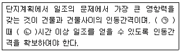
- ㉠ 동지, ㉡ 2
- ㉠ 하지, ㉡ 4
- ㉠ 하지, ㉡ 2
- ㉠ 동지, ㉡ 4
(정답률: 63%)
25. 자연공원의 자연 탐방로(Nature trail)는 일주해서 원지점에 돌아오는 코스 혹은 한 지점에서 다른 지점으로 연결하는 경우 설치방법의 유의사항으로 틀린 것은?
- 해설판은 이해 하기 쉬운 표현 방법을 사용 할 것
- 배수가 양 호 할 것
- 연장은 2~3km, 폭은 1.5~2.0m 정도로 할 것
- 증단 구배는 15° 이상으로 할 것
(정답률: 82%)
26. 도시공원 및 녹지 등에 관한 법률 시행규칙에서 취락지구로 지정할 수 있는 면적 기준 중 ( )안에 적합한 수치는?
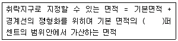
- 10
- 20
- 30
- 50
(정답률: 42%)
27. 아파트 단지내 가로망 기본유형별 특성 중 격자형(格字型) 가로망의 특징이 아닌 것은?
- 통과교통이 적어져 주거환경의 안전성이 확보된다.
- 토지이용상 효율적이며, 평지에서 정지작업이 용이하다.
- 경관이 단조로우며, 지형의 변화가 심한 곳 에서는 급한 경사가 발생한다.
- 일조(日照)상 불리하며, 접근로에 흔돈이 유발된다.
(정답률: 60%)
28. 도시공원 및 녹지 등에 관한 법률상 독립적 구성일 경우 근린공원으로 조성할 수 있는 최소 규모 기준은? (단, 근린생활권근린공원으로 구분되는 것을 의미한다.)
- 1500 제곱미터
- 5000제곱미터
- 10000제곱미터
- 100000제곱미터
(정답률: 55%)
29. 우리나라에서 환경영향평가를 실시하여야 하는 환경영향 평가대상사업으로 규정되어 있지 않은 것은?
- 도시의 개발사업
- 도로의 건설사업
- 관광단지의 개발사업
- 산지의 사방사업
(정답률: 64%)
30. 초본군락지에 대한 식생조사 방법으로 부적합한 것은?
- 쿼트라트업 (Quadrate Method)
- 접선법(Line Interception Method)
- 점에 의한 법(Point Contact Method)
- 간격법(Distance Method)
(정답률: 34%)
31. 도시환경에 있어 형태(form)와 행위(activity)의 일치에 대한 연구를 하여 토지의 물리적 형태가 지닌 행위적 의미의 상호 관련성을 분석한 사람은?
- 케빈 린치(Kevin Lynch)
- 칼 스타이니츠(Carl Steinitz)
- 로오렌스 할프린(Lawrence Halprin)
- 아버니티와 노우(Abernathy and Noe)
(정답률: 32%)
32. 대기오염, 소음, 진동, 악취 그 밖에 이에 준하는 공해와 각종 사고나 자연재해 그 밖에 이에 준하는 재해 등의 방지를 위하여 설치하는 도시공원 및 녹지 등에 관한 법률상의 오픈스페이스는?
- 근린공원
- 연결녹지
- 완충녹지
- 경관녹지
(정답률: 67%)
33. 국토의 계획 및 이용에 관한 법률상 특열시ㆍ광역시ㆍ시ㆍ또는 군의 관할구역에 대하여 기본적인 공간구조와 장기발전 방향을 제시하는 종합계획으로서 도시관리계획수립의 지침이 되는 계획은?
- 광역도시계획
- 도시계획
- 도시기본계획
- 도시관리계획
(정답률: 65%)
34. 다응 중 “자연휴양림”과 관련된 설명으로 틀린 것은?
- 산림청장은 소관 국유림의 경관ㆍ유치ㆍ면적 등이 대통령령이 정하는 기준에 적합한 때에는 해당 국유림을 자연휴양림으로 지정할 수 있다.
- 자연휴양림의 소유자는 자연휴양림에 입장하는 자로부터 입장료 및 시설이용료를 징수할 수 없으며, 관련 행정기관으로부터 분기멸 실행예산을 받아 운영한다.
- 30헥타르 이상인 산림으로서 농림수산식품부령이 정하는 바에 따른 적지평가조사 결과 자연휴양림 조성의 적지로 평가된 산림은 지정대상이 된다.
- 자연휴양림시설의 타당성 평가자는 산림ㆍ환경ㆍ건축 또는 토목 등에 관한 전문지식이 있는 자 중에서 산림청장이 위촉하는 3인 이상으로 구성한다.
(정답률: 60%)
35. 다응 원격탐사사 방법 중 광역 조경계획에 있어서 가장 광범위하고 정확한 자료를 신속하게 수집할 수 있는 방법은?
- 항공사진 판독법
- 레이다 형상법
- 다중스펙트럼투사법
- 인공위성탐사법
(정답률: 63%)
36. 18홀 정규 골프장의 설계시 토지이용의 효율성을 고려할 때 490~575 야드(yard) 정도가 되는 규모의 훌은 몇 개 정도 설치하는 것이 바람직한가?
- 2개
- 4개
- 6개
- 10개
(정답률: 44%)
37. 부지(site)에 설치될 구조물이 토양의 압축과 팽창 또는 동결에 의한 피해를 입지 않기 위해서는 어떠한 토양이 가장 적합한가?
- 사토
- 식양토
- 미사질식양토
- 중식도
(정답률: 39%)
38. 환경영향평가법에서 정하는 환경영향평가항목은 대기환경, 수환경, 토지환경, 자연생태환경, 생활환경, 사회ㆍ경제분야로 구분된다. 이 중 “생활환경 분야”의 평가 세부사항에 해당하는 것은?
- 인구
- 위락ㆍ경관
- 주거
- 토양
(정답률: 46%)
39. 행태적 분석 모델에 해당하지 않는 것은?
- PEQI 모델
- 3원적 모델
- 순환 모델
- 기능적 모델
(정답률: 36%)
40. 최소의 비용으로 최대의 공간을 제공하며, 주택의 접지성(接地性)과 프라이버시를 살리면서 최대한의 가구를 수용할 수 있는 주택유형은?
- 독립주택
- 연립주택
- 계단실형 아파트
- 엘리베이터 아파트
(정답률: 66%)
3과목: 조경설계
41. E.T.Hall은 4종류의 대인간격을 구분하였다. 이 중 친한 친구들 간의 일상적 대화에서 유지되는 거리를 무엇이라 하는가?
- 친밀한거리(intimate distance)
- 개인적거리(personal distance)
- 사회적거리(social distance)
- 공적거리(public distance)
(정답률: 43%)
42. 케빈 린치(Kevin Lynch)는 도시경관을 분석함에 있어 도시의 이미지를 5가지 요소로 기호화하여 사용하였는데 그 요소에 해당하지 않는 것은?
- 도로(palhs)
- 랜드마크(landmarks)
- 하천(river)
- 경계(edges)
(정답률: 70%)
43. 설계도면 에서 일반벽돌의 단면 표시 기호는?
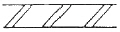
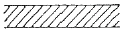
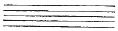
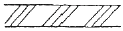
(정답률: 63%)
44. 먼셀의 표기법에서 10RP 7/8은 무슨 색인가?
- 분홍
- 빨강
- 보라
- 자주
(정답률: 55%)
45. 인체의 치수를 기본으로 하여 전체를 황금비 관계로 잡아가는 독자적인 조회 척도로 가장 적합한 것은?
- 피보니치 급수(fibonacci series)
- 스케일(scale)
- 모듈러(modulor)
- 비례(proportion)
(정답률: 44%)
46. 시방서에 관한 설명 중 틀린 것은?
- 시방서는 건설공사의 입찰, 견적 공사시공에 꼭 필요한 서류이다.
- 표준시방서는 설계의도를 명확히 표현하기 위한 것으로서 설계도에서 표시할 수 없는 재료와 공법을 기술한다.
- 특기시방서란 특정한 공사에서 유의해야 하는 시방서를 말한다.
- 공사시방서란 시설들별 표준시방서를 기본으로 모든 공징을 대상으로하여 특정한 시공 또는 전문시방서의 작성에 활용하기 위한 종합적인 시공기준이다.
(정답률: 50%)
47. 엔타시스(entasis)란 무엇인가?
- 하중을 받는 기둥에서 힘의 분산을 꾀하려는 착각교정
- 기둥 중앙부가 오목진 곡선으로 보이는 착각을 교정
- 멀리 있는 물체가 가까이 있게 보이는 착각을 교정
- 기둥에 받히는 하중을 위로 떠받아 올리려는 착각교정
(정답률: 37%)
48. 다음 설명하는 것은 무엇인가?
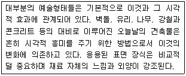
- 공간의 환영(Illusuin of space)
- 패턴(Pattern)
- 동세(Movement)
- 질감(Texture)
(정답률: 66%)
49. 투시도에 대한 설명 중 옳지 않은 것은?
- 멀고 가까운 거리감을 느낄 수 있도록 나타내는 도법이다.
- 투시도의 종류에는 평행, 유각, 경사투시도가 있다.
- 시점에 기까울수록 크게 나타난다.
- 입체의 실제 크기와 치수가 정확히 나타난다.
(정답률: 70%)
50. 친환경적 도시시설 중에는 자전거전용도로가 가장 효율적인 시설 중의 하나이다. 다응 중 자전거 전용도로 설계시 양쪽의 여유를 고려한 1차선 폭으로 가장 적합한 것은?
- 100cm
- 120cm
- 150cm
- 180cm
(정답률: 63%)
51. 색의 성질에 관한 기술로서 적합하지 않은 것은?
- 같은 명도일 때 색면(色面)이 넓은 쪽이 명도가 높아 보인다.
- 같은 면적일 때 밝은 색이 어두운 색보다 작게 보인다.
- 동일한 색이라도 거리에 따라 다른 색 효과를 줄 수 있다.
- 색은 각기 고유한 감정을 유발한다.
(정답률: 56%)
52. 다음 특징 설명에 해당하는 용지는?
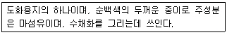
- 켄트지
- 와트만지
- 백상지
- 모조지
(정답률: 34%)
53. 안내표지판의 설계시 가장 신경써서 특별히 고려해야 할 사항은?
- 글자체의 독특함 확보
- 다양한 색조의 도입
- 글자 크기의 최대화
- CIP개념의 도입
(정답률: 53%)
54. 식재에 의해 조성되는 기본공간 유형 중 공간의 양측면에 수관폭이 넓지 않고 키가 큰 수목의 식재에 의해 상부로는 공간이 개방되어 있고, 측면은 열식 혹은 군식된 수목에 의해 차단되어 있는 공간으로 시선을 상부로 상승시켜주며, 수목 성장에 따라 공간의 번화를 주면서 방항을 유도 할 수 있는 공간은?
- 개방공간(Open space)
- 관개공간(Canopied space)
- 위요관개공간(Enclosed canopied space)
- 수직공간(Vertica space)
(정답률: 44%)
55. 대상물의 실제 길이보다 그린 도면에서의 대응하는 길이가 100배 큰 축척을 바르게 나타낸 것은? (단, KS 제도통칙의 기준을 따른다.)
- 1:100
- 100:1
- 1:1/100
- 1×103:1
(정답률: 68%)
56. 분수 설계와 관련된 설명으로 옳은 것은?
- 분수대의 공간크기는 최소한 분출높이의 10배로 한다.
- 수중펌프형 분수는 비교적 좁은 공간에 적합한 시설이다.
- 바닥포장형 분수는 랜드마크성이 강한 곳에 설치한다.
- 낙엽이나 쓰레기를 차폐하기에 적합한 장치물로 분수가 사용된다.
(정답률: 31%)
57. 포장 설계시 유의할 사항으로 옳지 않은 것은?
- 포장재료의 재질은 외부공간의 공간감 형성에 많은 영향을 미친다.
- 설계가는 포장유형을 보행자의 활동 유형과 함께 고려하려는 노럭이 필요하다.
- 보도포장에서 석재의 표면처리는 물갈기 마무리가 가장 좋다.
- 포장패턴의 다양화란 재질, 컬러, 도안 등의 요소들을 총체적으로 고려하는 것을 의미한다.
(정답률: 69%)
58. 하루의 대기변화를 느낄 수 있는 구름, 저녁노을, 파란 하늘 등은 무엇과 관계가 있는 현상인가?
- 빛의 반사
- 빛의 산란
- 빛의 굴절
- 빛의 회절
(정답률: 60%)
59. 경관을 구성하는 방법 중 눈앞에 보이는 주위의 자연경관을 어떤 구도(構圖)속에 포함해 그 구도가 한층 큰 효과를 갖도록 교묘히 구성하는 방법은?
- 축경(縮景)
- 차경(借景)
- 원경(遠景)
- 첨경(添景)
(정답률: 60%)
60. 설계연구를 위해서는 연구방법의 신뢰도와 타당성이 검증되어야 한다. 타당성(ValidiIy)의 유형에 속하지 않는 것은?
- 개념의 타당성
- 예측의 타당성
- 논리의 타당성
- 내용적 타당성
(정답률: 49%)
4과목: 조경식재
61. 토양의 산성화가 식물의 생육메 미치는 영향을 설명한 것 중 틀린 것은?
- 수소이온농도가 높으면 식물 뿌리에 침투하여 단백질을 응고 혹은 용해시키는 작용을 한다.
- 산성토에서는 토양 중 식물에 유해한 AI의 존재로 인하여 P은 식물에 이용될 수 없는 불가급형태로 된다.
- 식몰체에 다량원소는 잘 흡수되지 않지만, B, Mo 등은 잘 흡수된다.
- 토양산도가 높아지면 세균에 의한 질소고정 작용이나 질산화작용이 매우 저하된다.
(정답률: 62%)
62. 소나무과(科)의 나무로만 짝지어진 것은?
- 구상나무, 금송, 개잎갈나무
- 공솔, 독일가문비, 주목
- 반송, 삼나무, 개잎갈나무
- 일본잎갈나무, 잣나무, 전나무
(정답률: 34%)
63. 용도지역이 다른 두 지역간에 충돌을 예방하기 위하여 숲을 조성하게 되는데 이런 식재 또는 도로 외측에 수목을 심어서 운전자에게 안정감을 주게 하는 식재 수법은?
- 위요식재
- 유도식재
- 지표식재
- 완충식재
(정답률: 45%)
64. 녹음식재에 관련된 설명으로 옳지 않은 것은?
- 수종선정시 Laηbert-Beer 법칙을 고려해 본다.
- 파골라는 좁은 정원에 어울리는 녹음시설이다.
- 주택에 대한 겨울철 일조문제에서 녹음식재 구조는 문제되지 않는다.
- 태양고도 H에서 수고 L의 녹음수 그림자 길이는 Lㆍcot H 인 관계에 있다.
(정답률: 63%)
65. 일반적인 방풍림을 주풍(主風)에 대하여 수직으로 식재하였을 때, 풍하측(風下側)에 미치는 범위는 수고의 몇 배의 거리까지 이르는가?
- 25~30배
- 11~15배
- 6~10배
- 1~5배
(정답률: 50%)
66. 수피가 벗겨져 흑황색 얼룩무늬의 톡색이 있으며, 전정을 싫어하고 여름에 백색의 꽃이 피는 수종은?
- Stewartia pseudocamellia Maxim.
- Chaenomeles sienses Koehne.
- Ameranchier asiarica Endl.
- Ulmus davidiana var. japonica Nakai.
(정답률: 43%)
67. 모든 꽃이 무성화이며 주로 사찰에 식재되는 수종은?
- Quercus acutissía Carruth.
- Viburnum opulus for. hydrangeoíes Hara
- Wisteria floribunda DC. for. floribunda
- Pyracantha angustifolia C. K. Schneid.
(정답률: 50%)
68. 식재형식은 자연풍경식 식재와 정형식 식재로 구분할 수 있는데 다음 중 정형식 식재에 속하지 않는 것은?
- 교호식재
- 군식
- 열식
- 대식
(정답률: 60%)
69. 군락 측정용 방형구(Quadrat method)의 면적 중 삼림군락 측정용으로 사용되는 최소 넓이 기준은?
- 0.1~1m2
- 5~10m2
- 25~100m2
- 200~500m2
(정답률: 38%)
70. 수목을 식재하고자 할 때 수목검사시 다음 설명 중 ( )안에 적합한 수목규격의 허용범위는?
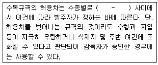
- 0 ~ -5%
- -5 ~ -10%
- -10 ~ -15%
- -15 ~ -25%
(정답률: 73%)
71. 동아시아에만 자라는 낙엽교목으로 잎은 호생하고 둥글며 5~9개로 갈라지고, 줄기에 굵은 가시가 있고, 공원수나 정원수로 적당한 수종은?
- Robilnia pseudoacacia L.
- Kalopanax septemlobus Koidz.
- Gleditsia japonica Miq.
- Sorbus aInifolia K. Koch
(정답률: 30%)
72. 수목의 생육에 가장 불리한 환경을 설명한 것은?
- 수분함수 pF가 2.7 이며 투수성이 100cm3/mìn인 토양
- 입단화가 발달되고 지표 경도가 18~24mm 인 토양
- 점토가 차지하는 비율이 15% 이상인 토성의 토양(식양토, 식토)
- 43%의 공극량을 나타내고 토심이 150cm가 되는 토양
(정답률: 21%)
73. 산림의 50%는 소나무림, 30%는 신갈나무림, 20%는 떡갈나무림으로 구성된 산림을 가리키는 것은?
- 순림
- 이령림
- 혼효림
- 보안림
(정답률: 72%)
74. 두목작업(頭木作業, Pollarding)에 적합하지 않은 수종은?
- Ginkgo biloba L.
- Platanus orienta/ls L.
- Salix koreensis Andersson
- Robinia pseudoacacia L.
(정답률: 45%)
75. 생태적 천이(발전단계와 성숙단계)에서 기대되는 특성 설명이 틀린 것은?
- 발전단계에서의 순군집샘산량(수확량)은 성숙단계보다 높다.
- 발전단계에서의 생화학적 다양성은 성숙단계보다 낮다.
- 발전단계에서의 종의 다양성-불편성의 요소는 성숙단계보다 높다.
- 발전단계에서의 유지생체량/단위에너지흐름(B/E)은 성숙단계보다 낮다.
(정답률: 31%)
76. 다음 ( )안에 적합한 용어는?
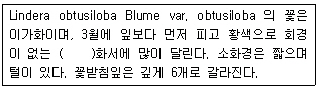
- 원추
- 총상
- 산형
- 산방
(정답률: 41%)
77. 다음 중 아황산가스에 약한 수목은?
- Daphniphyllum macropodum Miq
- Torreya nucilera Siebold & Zucc.
- Chamaecyparis obtusa Endl.
- Zelkova serrata Makino
(정답률: 32%)
78. 한국잔디 중 들잔디(Zoysia japonica)의 특징 설명으로 틀린 것은?
- 들잔디의 내건성은 왕잔디(Zoysia macrostachya)보다 강하다.
- 들잔디의 질감은 비로드잔디(Zoysia tenuifolia)보다 거칠다.
- 들잔디의 성육속도는 고려잔디(Zoysia matrella)보다 빠르다.
- 들잔디의 내한성은 갯잔디(Zoysia sinica)보다 약하다.
(정답률: 56%)
79. 나무 잎이 먼저 나오고 난 다음에 꽃이 피는 것은?
- Prunus mume Siebold & Zucc. for. mume
- Prunus yedoensis Matsum.
- Cornus oflicinalis Siebold & Zucc.
- Cornus kousa F. Buerger ex Miquel
(정답률: 34%)
80. 다음 수중 중 녹응의 기능이 가장 좋은 광엽수는?
- Poowlus glandulosa Uyeki
- Betula platypl7ylla var. japonica H.
- Prunus armeniaca var. ansu Maxim
- Paulownia coreana Uyeki
(정답률: 41%)
5과목: 조경시공구조학
81. 콘크리트의 강도는 경과시간(재령)에 따라 강도가 증가한다. 일반적으로 설계기준 강도를 규정하는 콘크리트의 강도는 표준양생시 재령 몇 일을 기준으로 하는가?
- 7일
- 14일
- 21일
- 28일
(정답률: 59%)
82. 강의 열처리 및 가공에 대한 설명으로 툴린 것은?
- 높은 온도로 가열 후 노(爐)나 재 속에서 서서히 냉각하는 것은 풀림이다.
- 담금질 조직은 탄소강이 많거나 냉각 속도가 빠를수록 담금질 효과가 크다.
- 용해된 금속을 주형틀 속에다 부어넣어서 응고시켜 각종 형태의 제품을 만드는 것은 주조이다.
- 회전하는 롤러 사이에 재료를 통과시켜 판재, 형재, 관재 등으로 성형하는 것은 단조이다.
(정답률: 28%)
83. 도막방수, 아스팔트 방수, 시트방수에 관한 비교 설명으로 옳지 않은 것은?
- 외기에 대한 영향은 도막방수가 아스팔트 방수보다 민감하다.
- 공사기간은 아스팔트 방수가 도막방수보다 짧다.
- 방수층의 신축성은 도막방수도 비교적 크지만, 시트방수가 가장 크다.
- 방수층의 끝마무리는 아스팔트방수는 불확실하나 도막방수는 간단하다.
(정답률: 36%)
84. 길어깨(路肩)의 설치 목적으로 틀린 것은?
- 긴급구난시 비상도로로 활용
- 고장차의 대피
- 도로의 주요 구조부의 보호
- 고속도로 앞지르기시 통행에 이용
(정답률: 66%)
85. 목재의 일반적인 특성으로 부적합한 것은?
- 열 전도률이 높아 보온, 방한성이 낮으며, 차음성, 흡음성이 낮다.
- 비중에 비하여 강도와 탄성이 크므로 구조용재로도 이용된다.
- 절단, 마감질 등이 용이하며 다양한 형상으로 제작할 수 있다.
- 고층이나 징 스팬의 건축물에는 사용하기 어렵다.
(정답률: 58%)
86. 보의 처짐에 대한 설명 중 틀린 것은?
- 보의 처짐은 보의 길이, 하중, 탄성계수, 단면2차 모멘트에 의해 결정된다.
- 보의 길이와 하중이 커질수록 처짐이 커지게 된다.
- 목재의 경우 강재보다 탄성계수가 훨씬 작기 때문에 강재보다 처짐이 커지게 된다.
- 대부분의 경량구조물에서는 보의 처짐을 스팬의 1/100~1/150 이내로 제한하는 것이 좋다.
(정답률: 26%)
87. 건설기계의 시간당 작업능력(m3/hr)은 “Q = nㆍqㆍfㆍE"의 기본식를 기준으로 하여 적용하는데 여기서, E 는 무엇인가? (단, n은 시간당 작업 사이클 수, q는 1회 작업 사이클 당 표준작업량, f는 토량환산계수이다.)
- 작업효율
- 현질작업능력계수
- 능력계수
- 실작업시간율
(정답률: 58%)
88. 길이기 5m, 원구직경이 40cm, 말구직경이 30cm, 중앙부직경이 38cm인 원목의 재적은 약 몇 사이(才) 인가? (단, π 는 3.14로 하고, Newton식을 사용한다.)
- 162사이
- 154사이
- 147사이
- 136사이
(정답률: 22%)
89. 대형 불도저를 이용하여 자연상태의 지형을 절취 운반하려 할 때 시간당 작업량 산출에 필요한 토량환산 계수(T)는 다음 중 어느 것이 적합한가?
- 1
- L 값
- C 값
- 1/L 값
(정답률: 42%)
90. 기둥의 세장비(細長比)로 옳은 것은?
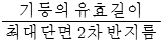
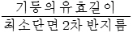
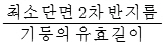
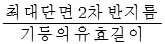
(정답률: 52%)
91. 연약한 점토질에 사용되며 +자형 닐개를 회전하여 회전력에 저항하는 모멘트를 측정하는 시험은?
- 베인테스트
- 지내력시험
- 표준관입시험
- 상축압축시험
(정답률: 44%)
92. 옥상 조경의 경제적인 효과가 아닌 것은?
- 건물옥상 표면의 노화방지
- 방수층 보호 및 화재예방
- 첨두유량 증가
- 냉ㆍ난밤 에너지 절약효과
(정답률: 64%)
93. 그림과 같은 보의 C접에서의 처짐량은? (단, 보의 굽힘 강성 EI는 일정하고, 자중은 무시한다.)
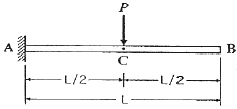
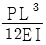
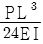
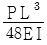
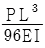
(정답률: 39%)
94. 환경시설대와 방음벽에 대한 설명으로 틀린 것은?
- 도로변 지역의 소음환경기준은 환경정책기본법에서 용도지역에 따라 75~90dB 로 규정하고 있다.
- 주거지역의 환경보전을 위하여 필요한 지역에는 도로 바깥쪽에 환경시설대를 설치할 수 있다.
- 환경시설대의 폭은 10~20m를 기준으로 한다.
- 환경시설대에는 길어깨, 식수대, 측도, 방음벽, 보도 등이 포항된다.
(정답률: 45%)
95. 숏크리트에 대한 설명으로 틀린 것은?
- 숏크리트 장기강도의 설계기준강도는 재령 28일에서 설정한다.
- 배합은 노즐에서 토출되는 토출배합으로 표시한다.
- 숏크리트의 초기강도는 재령 3 시간에서 1.5~5.0 MPa을 표준으로 한다.
- 건식방식에 의한 숏크리트의 배합에서 굵은골재의 최대 치수의 평균값은 25mm의 것이 널리 쓰인다.
(정답률: 34%)
96. 조적조에서 개구부 상부에 설치하는 아치(Arch)는 부재의 하부에 어떤 응력이 생기지 않는가?
- 전단력
- 집중하중
- 인장력
- 압축력
(정답률: 46%)
97. 중력식 옹벽 구조물 설계시 다음과 같은 안정조건메 따라 셜계되어야 하는데 그 내용이 틀린 것은?
- 옹벽에 작용하는 합력이 기부(基部)의 중앙 1/3 이내에 작용한다.
- 활동에 대한 저항력은 수평력의 1.5배 이상이다.
- 전도모멘트가 저항모멘트보다 크고, 안전율이 2.0 보다 커야 전도에 대해 안정성이 있다.
- 기부에 작용하는 압축력이 토양의 허용지내럭보다 작아야 한다.
(정답률: 24%)
98. 네트워크(network)에 의한 종합관리가 이루어지며 작업의 선후관계가 명확하게 이루어지는 공정표는?
- GANTT chart
- Bar chart
- PERT/CPM
- 산점도
(정답률: 38%)
99. 관개지역에 분무기의 살수작동 능력이 직경 6m 라면 살수기의 최대한의 간격(m)은 얼마로 하는 것이 일반적으로 타당한가? (단, 살수기의 최대간격은 살수 작동 직경의 60~65%로 한다.)
- 3.0~3.3m
- 3.6~3.9m
- 4.2~4.5m
- 4.8~5.1m
(정답률: 55%)
100. 콘크리트 치기에 대한 설명으로 부적합한 것은?
- 콘크리트를 2층 이상 나누어 칠 경우 하중의 콘크리트가 완전히 경화한 후에 시공한다.
- 한 구획 대의 콘크리트는 치기가 완료될 때까지 연속해서 쳐야 한다.
- 친 콘크리트는 거푸집 안에서 횡방향으로 이동시켜서는 안된다.
- 콘크리트 치기 중 블리딩수가 발생하면 이 물을 제거하고 콘크리트를 쳐야 한다.
(정답률: 62%)
6과목: 조경관리론
101. 다음 [보기]에서 설명하는 무기양료로 가장 적합한 것은?
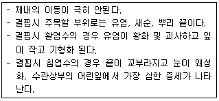
- B
- P
- K
- Ca
(정답률: 43%)
102. 벤치나 야외탁자 등 석재 부분의 균열폭이 큰 경우에 사용하는 보수방법은?
- 고무압식주입공법
- 표면실링공법
- V자형 절단공법
- 패칭공법
(정답률: 46%)
103. 토질이 점토나 이토(泥土)인 경우 지지력이 약하고 동결융해로 파괴되므로 동결심도 하부까지 모래나 자갈ㆍ모래로 환토하는 포장 시공방법은?
- 노면지환공법
- 배수처리공법
- 지반치환공법
- 노면요철부처리공법
(정답률: 55%)
104. 난지형 잔디의 뗏밤주기(配土作業)는 언제 실시하는 것이 적기인가?
- 11~12월
- 2~3월
- 5~7월
- 9~10월
(정답률: 65%)
1⑤. 미국흰불나방의 구제방법에서 그 효과가 가장 적은 것은?
- 알, 기간에 알덩어리가 붙어 있는 잎을 채취하여 소각한다.
- 유충 발생 초기에 약제를 살포한다.
- 약제는 클로로탈로닐수화제(타코닐)를 1000배로 희석해서 ha당 1000L 정도로 살포한다.
- 성충의 활동시기에 피해 임지 또는 그 주변에 유아등이나 흡입 포충기를 설치하여 유인 포살한다.
(정답률: 40%)
106. 그림의 공기 및 건설비 곡선에서 A, B, C, D 시간 중 어디에 해당하는 공기가 최적공기인가?
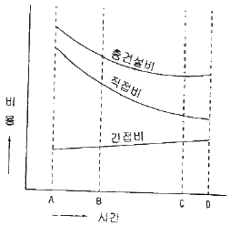
- A
- B
- C
- D
(정답률: 56%)
107. 조경 공간 관리 중 경상적 관리수준에 해당하는 관리는 일반적으로 조성비의 어느 정도 비율의 경비가 소요되는가?
- 0.4~0.8%
- 0.8~1.2%
- 1.2~1.6%
- 1.6~2.0%
(정답률: 44%)
108. TQC(total quality control)를 위한 도구에 대한 다음 설명 중 틀린 것은?
- 파레토도 : 가로축에 시공불량의 내용이나 원인을 분류해서 크기순으로 나열하고 세로측에 불량도를 잡아 막대그래프를 작성하고, 누적비율을 꺾은선으로 표시한 것이다.
- 관리도 : 가로축에 로트(lot), 세로축에 품질 특성치의 항목을 잡아 중심선과 상, 하위의 관리 한계선을 설정하여 공정상의 이상유무를 판정한 것이다.
- 히스토그램 : 공사 또는 품질관리 상태의 만족 여부를 판단하기 위하여, 가로축에 특성치, 세로축에 도수를 잡아 도수분포를 분석한 것이다.
- 산점도 : 치수나 강도 등 어느 하나의 품질 특성과 이에 대한 분포상태를 타나낸 것이다.
(정답률: 43%)
109. 잡초의 여러 기관에서 작물의 알아나 생육을 억제하는 특정물질을 분비함으로써 피해를 일으키는 작용은?
- Competition
- Parasitism
- Allelopathy
- Transmission
(정답률: 50%)
110. 다음 중 침투이행성의 유기인계 살충제는?
- 프로파자이트수화제(오마이트)
- 포스파미돈액제(다무르)
- 델타메트린유제(데시스)
- 클로르피리포스수화제(더스반)
(정답률: 49%)
111. 다음 조경관리의 구분 중 이용관리의 구분만으로 해당되는 것은?
- ① 안전관리, ② 주민참여의 유도
- ① 홍보, ② 조직의 관리
- ① 편익 및 유희시설물, ② 이용지도
- ① 적재수목, ② 안전관리
(정답률: 48%)
112. Godschalk & Parker의 레크레이션 수용능력 개념 설명이 틀린 것은?
- 수용능력 개념을 환경계획의 조작적 도구, 수단으로 이용 가능성을 제안
- 심리적 수용능력
- 수용능력의 이론적 측정기법의 개발(수리모형)
- 지각적 용량
(정답률: 38%)
113. 자연공원에서 동ㆍ식물 서식지 확대를 위한 모니터링(Monitoring)의 효과적 방법이라 하기 어려운 것은?
- 측정지표의 정성화
- 신뢰성 있는 기업의 도입
- 최소비용의 도모
- 위치선정의 타당성
(정답률: 55%)
114. 조경수목을 가해하는 식엽성 해충에 해당하는 것은?
- 진딧물
- 솔껍질깍지벌게
- 잣나무넓적잎벌
- 솔잎흑파리
(정답률: 45%)
115. 레크레이션 관리 유형에는 부지관리, 직접적 이용제한, 간접적 이용제한으로 구분된다. 다음 중 부지관리 방안으로 적합하지 못한 것은?
- 부지 강화
- 시설개발
- 활동 제한
- 이용유도
(정답률: 35%)
116. 굵은 골재 가운데 질석을 700~800℃의 고온에서 튀긴것으로 일반적으로 파종이나 잡목 용도로 주로 사용되는 것은?
- 펄라이트(perlite)
- 버미큘라이트(vermiculite)
- 소성점토
- 모래와 자갈
(정답률: 40%)
117. 공사의 시공과정에서 전문기술자의 지식, 기술, 경험 등을 활용하여 발주관서의 자문에 응하고 설계서 등 기타관계 서류대로 시공되는가의 여부를· 확인하는 사람은?
- 감독관
- 도급자
- 발주자
- 감리자
(정답률: 56%)
118. 긍속재의 부식환경에 대한 설명 중 틀린 것은?
- 금속의 내구성에 영향을 미치는 기상요인 중 가장 문제가 되는 요인은 온도, 습도, 강우량, 등이다.
- 습도 50% 이하에서는 금속의 부식은 거의 진행되지 않는다.
- 해안지대에서 해수입자에 의한 금속부식 영향권은 3km이내이다.
- 일반적으로 온도가 높을수록 녹의 양도 늘어난다.
(정답률: 38%)
119. 계면활성제의 종류가 아닌 것은?
- 유탁제
- 유화제
- 습윤제
- 전착제
(정답률: 31%)
120. 곤충 분류학상 딱정벌레목(EI)에 속하지 않는 종은?
- 소나무좀
- 오리나무잎벌레
- 느티나무벼룩바구미
- 잣나무넓적잎멀
(정답률: 46%)